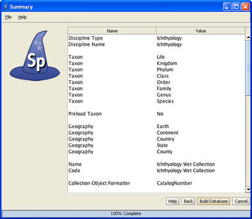
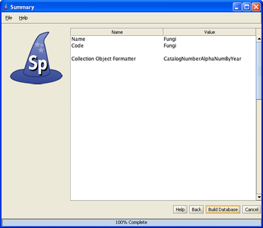

The Specify data management levels mimic the common levels of hierarchy within institutions. Access to information and Specify tools are then set at the various levels both within the application itself and through the User Permissions.
The Divisions, Disciplines and Collections for each institution are added and edited in the System Configuration module of Specify; System > Collection Setup > Configuration. All tabs need to be closed before opening the Configuration. This tool is available to Administrators only.
Collections information in Specify 6 databases is also organized at these institution levels to meet requirements for data integrity and data sharing among collections. Some data elements are commonly shared among all collections within an institution, while others are shared only among collections in the same taxonomic discipline, i.e. "at the Discipline level" in Specify. Before creating the institution levels it is imperative that an administrator also understand the data that is held at each level to create the correct setup.
When using a database that was created using the Wizard any additional Division levels should be added first, then Discipline and then Collection. Each is added at the level above it. For instance, Divisions are added within the Institution form.
Information for the Institution is edited in the Configuration tool. Security can be turned on or off on the Institution form by checking the box Is Security On. The status of security is shown on the status bar with an icon; (security on), or (security off).
Editing a Division and Discipline is accomplished on the Discipline form. A Collection can be edited either on the Discipline form or Collection form.
Click the  Institution button on the side bar to edit the Institution or add a Division.
Institution button on the side bar to edit the Institution or add a Division.
At least one Division should appear in the Division sub form.
Click the  (add) button to add a Division.
(add) button to add a Division.
Name is the only required field and is used in any lists of Divisions within Specify as well as in the Institution Hierarchy.
Abbreviation refers to an existing abbreviation for the Division.
Alt Name provides another field for name. This is often useful when a particular Division has changed names or uses a longer name than is applicable to the Hierarchy list.
URI stands for Uniform Resource Identifier and refers to a resource on the internet (a Division web site).
Icon URI This is a field for ABCD field. This is the path to an icon on the website that could be downloaded by another institution and displayed on their website to indicate a partnership.
Click the Division button on the side bar to edit a Division or add a Discipline.
The Division form includes information for each of the existing Divisions. The new Discipline will be added in the Division that is currently displayed in the work space. Use the navigation control at the bottom of the window to step to the Division that will include the new Discipline.
Navigation Control
In the Discipline sub form click the  (add) button to add a Discipline.
(add) button to add a Discipline.
It is important to note that Specify will require users to shut down and reopen the application after adding a Discipline.
A Discipline Wizard will walk you through adding not only a Discipline, but a Collection within the Discipline as well as Taxon and Geography Tree Definitions and nodes (names of Taxa and Geographical locations) and Catalog and Accession number. Each of these windows is explained below.

Add a Discipline
Discipline
Choose a taxonomic Discipline Type from the drop-down menu. Specify uses this information to load the correct default data entry Forms, Trees and schema (tables and fields) within Specify.
The Name will display within Specify and can be anything you wish. It can be queried and used in reports. It can also be edited from within Specify.

Create a Tree Definition for the Taxon tree
This table will create the tree definition for the Taxon tree. The Taxon tree operates at the Discipline level and can be used by all Collections within the Discipline you created in the last window.

Load Taxonanomic authority file
The Specify Discipline Wizard not only defines the Taxon tree but optionally also loads an authority file for your Discipline. This authority file was created using data from the Catalog of Life Project. If you choose to load the data into your tree when you open Specify and choose the Tree tab from the task bar, and Taxon tree from your side bar you will see a Taxon tree with hundreds of taxon nodes included. Then, when adding Collection Objects into your database you can simply choose a taxa from the Taxon field rather than adding each individually as needed.

Add Geographical authority file
The Geography tree operates at the Discipline level and is used by all Collections within the Discipline.
The Wizard will automatically load data for the Geography tree, including Continents, Countries, and States throughout the world as well as Counties within the United States. Data for the Geography tree was converted from the Getty Thesaurus of Geographic Names.

Add a Collection
Enter the Name and internationally recognized Collection Code to create a Collection within the Discipline. This is the name that will appear within Specify on the Collection form and can be queried and used in reports. This name will also appear in the list of collections when users change collections, so it should be an easily recognizable name; i.e. Fish Wet.
The Code should be your standard collections community assigned code for your collection. This Code will be used in data export and web interfaces in upcoming releases of Specify.

Catalog Number format
Specify is able to accept data for collection objects or observations without assigning a Catalog Number. But when Catalog Numbers are used, they must be unique for each lot, specimen or observation. Many collections routinely assign catalog numbers to incoming specimens, perhaps as part of the accessioning process. These numbers may require a format with specific sections for data such as Institution Code and year or they may simply use an incrementing number.
Catalog Numbers can either be unique to each Collection, shared by several or be used throughout the Institution. The Catalog Number chosen at this time will not affect where it is used relative to other Collections, this will be configured from within the Specify application.
Collections that do not use a specific format for their Catalog Number may choose 'None' and the Catalog Number will remain a text field on the forms where it appears.
Several formats are also available within this drop-down menu list:
CatalogNumber (2009-######) The year will appear automatically in the first section (2009) of the format, and can also be manually edited. The '###' section of the format is a number that is six digits in length and automatically incremented when Auto Numbering is turned on in Specify and manually entered when Auto Numbering is turned off. These two sections are separated by a dash.
CatalogNumberAlphaNumByYear (2009-######) The year will appear automatically in the first section (2009) of the format, and can also be manually edited. The '###' section of the format is a number that is six digits in length and automatically incremented when Auto Numbering is turned on in Specify and manually entered when Auto Numbering is turned off. These two sections are separated by a dash.
CatalogNumberNumeric (#########) This is a nine digit number that is automatically incremented when Auto Numbering is turned on in Specify and manually entered when Auto Numbering is turned off.
CatalogNumberString (XXXXXXXXXX) This is a ten digit string that can include numbers, alphabet or characters.
Specific information for each of these predefined formats can also be found on the window.
To create your own format choose 'Create'. This will open the Field Formatting Editor. Click HERE for the Field Formatting Editor help page.

Acccession Number format
Note: If you chose to manage your Accessions at the institutional level you will NOT see this window.
Accession Numbers may require a format or may simply use a number. Choose None to leave the Accession Number as a text field on the Accession form.
Several formats are offered in the drop-down menu list:
AccessionNumber (2009-AA-###) The year will appear automatically in the first section (2009) of the format, and can also be manually edited. The 'AA' section of the format is alphanumeric and accepts both characters a through z and numbers. The '###' section of the format is a number that is automatically incremented when Auto Numbering is turned on in Specify and manually entered when Auto Numbering is turned off. This format offers two alphanumeric characters and three incremented numbers.
AccessionNumberByYear (2009-AA-AAA) The year will appear automatically in the first section (2009) of the format, and can also be manually edited. The 'A' sections of the format are alphanumeric and accept both characters a through z and numbers. This format offers two alphanumeric sections, the first is two characters in length and the second is three characters in length.
AccessionStringFormatter (AAAAAA) This is a single alphanumeric format that accepts characters a through z and numbers. The Accession number would be seven characters in length.
Specific information for each of these predefined formats can also be found on the window.
To create your own format choose 'Create'. This will open the Field Formatting Editor. Please click HERE to open a help page for the Field Formatting Editor.

Sumary Window
Congratulations! You have finished the Specify Collection Wizard. This last screen displays all the data that has been created using the information provided in the preceding windows. If edits are required simply click the Back button until the desired window displays and re-enter the information.
Click the Discipline button on the side bar to edit a Discipline or add a Collection.
The Discipline information will appear at the top of the form with a Collections sub form underneath. The new Collection will be added in the Discipline that is currently displayed in the Workspace. Use the navigation control at the bottom of the window to step to the desired Discipline before adding the new Collection.
Navigation Control
Click the (add) button to add a Collection.
(add) button to add a Collection.
It is important to note that Specify will require users to shut down and reopen the application after adding a Collection.
A Collection Wizard will step you through the process of adding a collection as well as a Catalog Number format and Accession format (if applicable).
Add a Collection
Enter the Name and internationally recognized Collection Code to create a Collection within the Discipline. This is the name that will appear within Specify on the Collection form and can be queried and used in reports.
The Code should be your standard collections community assigned code for your collection. This Code will be used in data export and web interfaces in upcoming releases of Specify.
Catalog Number format
Specify is able to accept data for collection objects or observations without assigning a Catalog Number. But when Catalog Numbers are used, they must be unique for each lot, specimen or observation. Many collections routinely assign catalog numbers to incoming specimens, perhaps as part of the accessioning process. These numbers may require a format with specific sections for data such as Institution Code and year or they may simply use an incrementing number.
Catalog Numbers can either be unique to each Collection, shared by several or be used throughout the Institution. The Catalog Number chosen at this time will not affect where it is used relative to other Collections, this will be configured from within the Specify application. The Catalog Number format for this collection can not be edited once it is chosen.
Several formats are also available within this drop-down menu list:
CatalogNumber (2009-######) The year will appear automatically in the first section (2009) of the format, and can also be manually edited. The '###' section of the format is a number that is six digits in length and automatically incremented when Auto Numbering is turned on in Specify and manually entered when Auto Numbering is turned off. These two sections are separated by a dash.
CatalogNumberAlphaNumByYear (2009-######) The year will appear automatically in the first section (2009) of the format, and can also be manually edited. The '###' section of the format is a number that is six digits in length and automatically incremented when Auto Numbering is turned on in Specify and manually entered when Auto Numbering is turned off. These two sections are separated by a dash.
CatalogNumberNumeric (#########) This is a nine digit number that is automatically incremented when Auto Numbering is turned on in Specify and manually entered when Auto Numbering is turned off.
CatalogNumberString (XXXXXXXXXX) This is a ten digit string that can include numbers, alphabet or characters.
Specific information for each of these predefined formats can also be found on the window.
Collections that do not use one specific format for their Catalog Number may wish to choose CatalogNumberString from the list, this will allow any format to be entered.
To create your own format choose 'Create'. This will open the Field Formatting Editor. Please click HERE to open a help page for the Field Formatting Editor.
Acccession Number format
Note: If you chose to manage your Accessions at the institutional level you will NOT see this window.
Accession Numbers may require a format or may simply use a number. Choose None to leave the Accession Number as a text field on the Accession form. Accession Number formats are not editable once data has been entered in the database.
Several formats are offered in the drop-down menu list:
AccessionNumber (2009-AA-###) The year will appear automatically in the first section (2009) of the format, and can also be manually edited. The 'AA' section of the format is alphanumeric and accepts both characters a through z and numbers. The ### section of the format is a number that is automatically incremented when Auto Numbering is turned on in Specify and manually entered when Auto Numbering is turned off. This format offers two alphanumeric characters and three incremented numbers.
AccessionNumberByYear (2009-AA-AAA) The year will appear automatically in the first section (2009) of the format, and can also be manually edited. The 'A' sections of the format are alphanumeric and accept both characters a through z and numbers. This format offers two alphanumeric sections, the first is two characters in length and the second is three characters in length.
AccessionStringFormatter (AAAAAA) This is a single alphanumeric format that accepts characters a through z and numbers. The Accession number would be seven characters in length.
To create your own format choose 'Create'. This will open the Field Formatting Editor. Please click HERE to open a help page for the Field Formatting Editor.

Sumary Window
Congratulations! You have finished the Specify Collection Wizard. This last screen displays all the data that has been created using the information provided in the preceding windows. If edits are required simply click the Back button until the desired window displays and re-enter the information.
Collection Form
Collections can be edited on the Collection form found by clicking the Collection button on the Configuration side bar.
The Collection Name will be used on any Specify Collection lists as well as in the Institution Hierarchy.
Add Collecting Event Automatically creates a new, unique Collecting Event record for each Collection Object. This is required for Collections that include a one-to-one relationship between their Collecting Event and Collection Object on their Collection Object form. When using the default Specify forms all Collections except those in an Ichthyology Discipline will need to check this box.
ABCD Schema Fields is a sub form for adding this information to the Collection.